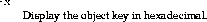

Usage:
catior [-x] <stringified IOR>
catior is a utility for viewing components of a stringified IOR. It displays the components of the stringified object reference supplied to it.
The options are:
